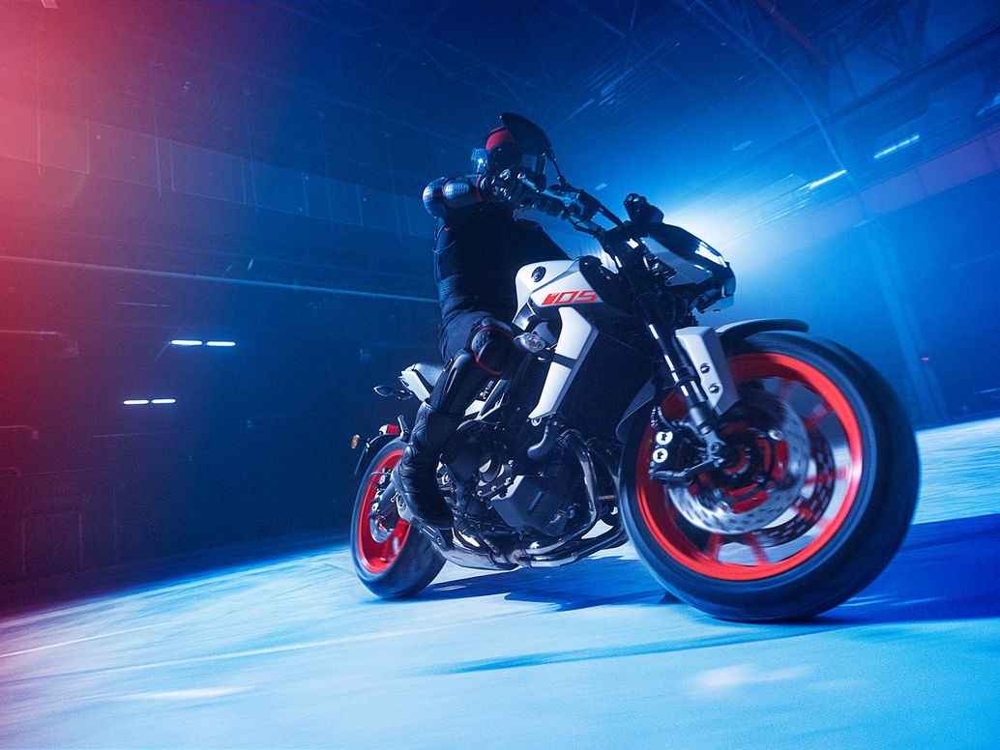

The MT-09 is the original Hyper Naked in Yamaha's not-so-secret society
of aggressive-looking and fun-to-ride streetbikes. From start to finish
the MT-09 was designed around the rowdy 847cc triple with crossplane crank
and a chassis that is very accommodating for riders of all levels. Over the years
the MT-09 has evolved into one of the best bangs for the buck in the streetfighter
or naked bike class.

What You Get
The 2020 Yamaha MT-09 is powered by a sweet 847cc, DOHC, liquid-cooled,
inline three-cylinder engine that is tuned for the type of low-end power
that makes a hooligan bike so much fun to ride
The control-filled cast aluminum frame features swoopy lines and the braced swingarm that incorporates a horizontal placement of the Monocross shock to create a responsive-handling chassis.
A fully adjustable 41mm inverted fork along with a preload- and rebound-adjustable shock smooths out most back city roads and backcountry byways that you might run across during your travels.
The MT-09 engine utilizes Yamaha’s Crossplane Crankshaft Concept which produces a linear torque delivery that is the trademark of the Hyper Naked lineup.
Traction Control also offers two modes plus the ability to be turned off completely.
A variety of rider assist functions begins with the YCC-T controlled D-Mode throttle mapping that allows for two separate levels of throttle response to choose from.
With its tapered aluminum handlebar, low seat height, relaxed footpeg placement, and narrow frame to fuel tank interface, the bike is comfortable to ride and the reach to the ground is easy for riders of all skill levels.
Yamaha offers a nice selection of accessories to help customize the MT-09 to suit your needs. This includes a taller windscreen, luggage, and even a quickshifter. This latest version of the MT-09 will be available in Ice Fluo, Matte Raven Black, or Team Yamaha Blue colorways. MSRP is set at $8,999 for all three models and they will be available starting this November at a dealer near you.